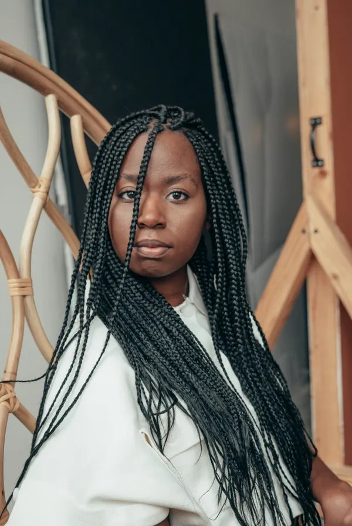
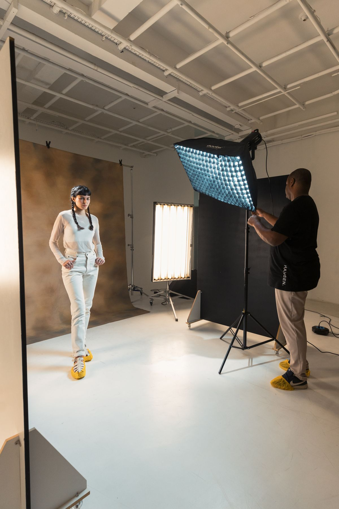
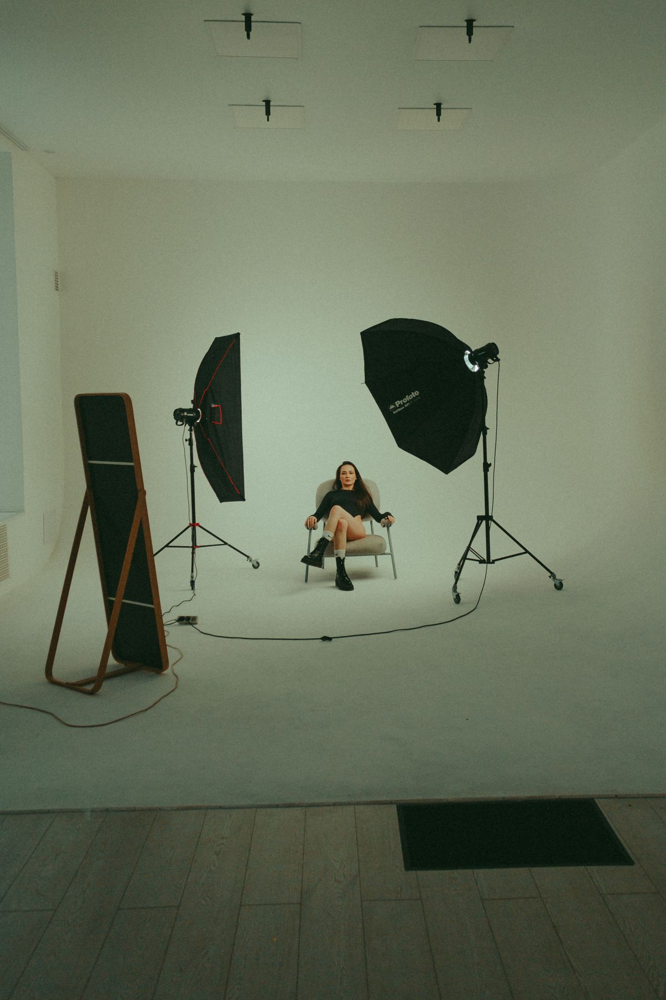

Portrait sessions
Comfortable, personality-driven portrait sessions. The studio takes time with children until they show their true colors.
Territory X Studio
Cedar Rapids, Iowa

Territory X Studio is a photography studio in Cedar Rapids, Iowa, specializing in comfortable, personality-driven portrait sessions. The studio is appointment-only. Owner Doug Thompson has a background in photography, film, and television broadcasting, and in touring stand-up comedy. The business is named after his wife and two daughters.
Rated 4.9 from 15 Google reviews.
Call to book: (319) 573-3684Comfortable, personality-driven portrait sessions. The studio takes time with children until they show their true colors.
The studio works by appointment only. Call to set up a session.
Owner Doug Thompson has a background in photography, film, and television broadcasting, and in touring stand-up comedy.



All photos on this page are stock photos, not photos of this business.
329 10th Ave SE, Cedar Rapids, IA
Plan a visitCall: (319) 573-3684